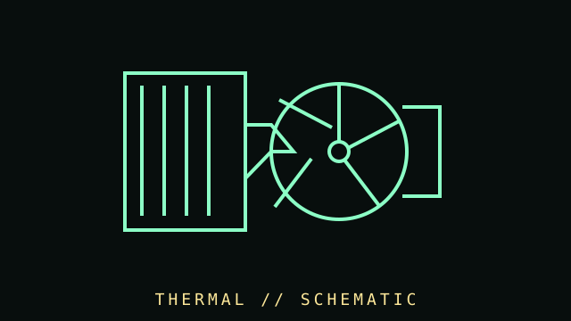

[ SUBCATEGORY DIRECTORY // 6 FILES // 184 PART RECORDS ]
Browse cooling subcategories
Each subcategory has its own page and lists individual part records. Open a file to browse its cataloged components.
Browse stock, low-profile, dual-tower, and workstation cooler model records.
OPEN SUBCATEGORY FILE →SUBCATEGORY FILE // 31 PART RECORDSAll-in-one liquid coolersBrowse AIO model records with radiator, bracket, tube, and wiring notes.
OPEN SUBCATEGORY FILE →SUBCATEGORY FILE // 58 PART RECORDSCase and radiator fansBrowse model-specific fan dimensions, connector details, and service caveats.
OPEN SUBCATEGORY FILE →SUBCATEGORY FILE // 18 PART RECORDSServer fans and blowersBrowse industrial server and equipment fan records.
OPEN SUBCATEGORY FILE →SUBCATEGORY FILE // 24 PART RECORDSThermal interfaces and passive accessoriesBrowse compound, heatsink, and thermal-accessory records.
OPEN SUBCATEGORY FILE →SUBCATEGORY FILE // 7 PART RECORDSCooling controllersBrowse fan-control hardware, channel ratings, and host-wiring details.
OPEN SUBCATEGORY FILE →[ COMPONENT RECORD // HEAT TRANSFER ]
Cooling
systems.
Cooling moves heat away from processors, graphics hardware, power electronics, and drives. Air coolers, case fans, vapor chambers, and liquid loops all depend on contact quality, airflow, and control.

CLASS RECORD: active and passive computer cooling. The correct mount, fan header, thermal load, case space, and manufacturer's operating limits are model-specific.
Reference specifications
| Air coolers | Heatsink base, heat pipes, fin stack, fan size, fan curve, socket bracket, cooler height, and RAM/VRM clearance affect fit and performance. |
|---|---|
| Fans | Common 3-pin DC and 4-pin PWM control; frame sizes include 80, 92, 120, and 140 mm. Connector pinout, current draw, static pressure, and speed vary. |
| Liquid systems | AIO or custom loop includes pump, cold plate, radiator, tubing, coolant, and fittings. Radiator support, pump header, leak checks, and service life matter. |
| Thermal material | Thermal paste/pads bridge microscopic gaps. Thickness, conductivity claims, electrical conductivity, and replacement interval depend on use and part design. |
Installation & monitoring
- Verify socket kit and case/radiator fit before installation. Remove protective films and follow the cooler maker's paste and torque instructions.
- Connect pump and fans to the documented headers; configure firmware control and confirm tachometer feedback.
- Route cables and tubes clear of blades and sharp edges. Monitor temperatures under a repeatable load and compare against the component maker's limits.
- Clean filters and heatsinks without overspinning fans with compressed air. Inspect liquid coolers for corrosion, residue, leaks, or pump noise.
- Replace thermal pads only with the required thickness; compressing a wrong pad can lift the cooler and overheat components.
Other thermal parts
Include laptop blowers, server fan walls, VRM heatsinks, memory heat spreaders, SSD thermal pads, thermal sensors, and fan splitters/controllers.
Sources & further reading
- Intel — Processor temperature and thermal guidanceProcessor-specific guidance should be checked for the exact model.
- Noctua — Cooler compatibility centreExample of model-specific socket/case compatibility lookup.
- ARCTIC — Product support and manualsManufacturer installation documentation and fan/cooler specifications.